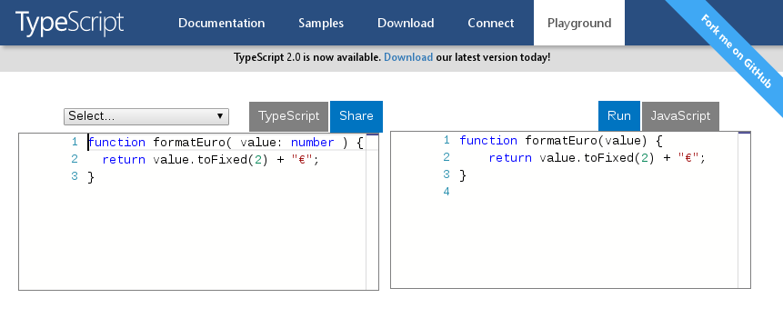

TypeScript
Das bessere JavaScript!?
Slides: http://bit.ly/wjax16-typescriptChristian Kaltepoth
Senior Developer @ ingenit
Why another JavaScript dialect?
Dynamic typing is wired
"3" + 1
// > "31"
"3" - 1
// > 2
TypeScript
=
ECMAScript + Types
JavaScript
let n = 3;
TypeScript
let n: number = 3;
Types are great
let n: number = 1;
// > 1
n = 2;
// > 2
n = "4";
// Error: Type 'string' is not assignable
// to type 'number'.
Catch errors early

Types
Basic types
// numbers
let n: number = 42;
// strings
let s: string = "Foobar";
// booleans
let b: boolean = true;
// arrays
let a: number[] = [ 1, 2, 4, 8 ];
Enum
enum Currency {
EUR, USD, JPY, GBP
};
let c: Currency = Currency.EUR;
c = "FOOBAR";
// Error: Property 'FOOBAR' does not exist on
// type 'typeof Currency'.
Tuple
let price: [ number, string ];
price = [ 12.99, "EUR" ];
// > OK
price = [ "EUR", 12.99 ];
// Error: Type '[string, number]' is not
// assignable to type '[number, string]'.
Any
let a: any;
a = "Foobar";
a = false;
a = [ 42, "Foobar", true ];
a = document.getElementById( "foobar" );
Type Inference
let n = 3; // inferred type is 'number'
n = "foobar";
// Error: Type 'string' is not assignable
// to type 'number'.
let n = null; // inferred type is 'any'
if( something ) {
n = 42; // OK
n = "foobar"; // OK
}
noImplicitAny = true
let n = null; // inferred type is 'any'
if( something ) {
n = 42;
}
// Error: Variable 'n' implicitly has an 'any' type.
let n: number = null; // type specified manually
if( something ) {
n = 42;
}
// OK
Advanced Types
let t: string|number;
t = 42;
// > OK
t = "foobar";
// OK
t = true;
// Error: Type 'boolean' is not assignable to type
// 'string | number'.
Functions
Typed Functions
function formatEuro( value: number ): string {
return value.toFixed(2) + "€";
}
formatEuro( 42 );
// > "42.00€"
formatEuro( "foobar" );
// Error: Argument of type 'string' is not assignable
// to parameter of type 'number'
let n: number = formatEuro( 42 );
// Error: Type 'string' is not assignable
// to type 'number'
Optional Parameters
function formatMoney( value: number,
currency?: string ): string {
return value.toFixed(2) + ( currency || "€" );
}
formatMoney( 42 );
// > "42.00€"
formatMoney( 42, "$" );
// > "42.00$"
Default Parameters
function formatMoney( value: number,
currency: string = "€" ): string {
return value.toFixed(2) + currency;
}
formatMoney( 42 );
// > "42.00€"
formatMoney( 42, "$" );
// > "42.00$"
Interfaces
Interfaces
let money = {
amount: 42,
currency: "€"
};
interface Money {
amount: number;
currency: string;
}
Using Interfaces
interface Money {
amount: number;
currency: string;
}
let money: Money = {
amount: 42,
currency: "€"
};
let amount = money.amount; // OK
let currency = money.curency;
// Error: Property 'curency' does not exist on type
Functions
interface Money {
amount: number;
currency: string;
asString: () => string;
}
let money: Money = {
amount: 42,
currency: "€",
asString: function () {
return this.amount.toFixed( 2 ) + this.currency;
}
};
money.asString(); // > 42.00€
Function Types
interface AsStringFunc {
(): string;
}
interface Money {
amount: number;
currency: string;
asString: AsStringFunc;
}
let money: Money = {
amount: 42,
currency: "€",
asString: function () {
return this.amount.toFixed( 2 ) + this.currency;
}
};
Extending Interfaces
interface AsStringFunc {
(): string;
}
interface Printable {
asString: AsStringFunc;
}
interface Money extends Printable {
amount: number;
currency: string;
}
Structural Subtyping
interface Foo {
value: number;
}
interface Bar {
value: number;
}
let foo: Foo = {
value: 3
};
let bar: Bar = foo; // OK
Classes
The old way
var Money = function ( amount, currency ) {
this.amount = amount;
this.currency = currency;
};
Money.prototype.asString = function () {
return this.amount.toFixed( 2 ) + this.currency;
};
var money = new Money( 42, "€" );
money.asString();
// > 42.00€
ECMAScript 2015
class Money {
constructor( amount, currency ) {
this.amount = amount;
this.currency = currency;
}
asString() {
return this.amount.toFixed( 2 ) + this.currency;
}
}
let money = new Money( 42, "€" );
TypeScript
class Money {
private amount: number;
private currency: string;
constructor( amount: number, currency: string ) {
this.amount = amount;
this.currency = currency;
}
asString() {
return this.amount.toFixed( 2 ) + this.currency;
}
}
Readonly Properties
class Money {
private readonly amount: number;
private readonly currency: string;
constructor( amount: number, currency: string ) {
this.amount = amount;
this.currency = currency;
}
asString() {
return this.amount.toFixed( 2 ) + this.currency;
}
}
Parameter Properties
class Money {
constructor( private amount: number,
private currency: string ) {
// empty
}
asString() {
return this.amount.toFixed( 2 ) + this.currency;
}
}
Implementing Interfaces
interface Printable {
asString(): string;
}
class Money implements Printable {
constructor( private amount: number,
private currency: string ) {
// nothing here
}
asString() {
return this.amount.toFixed( 2 ) + this.currency;
}
}
There is more:
- Inheritance
- Abstract classes
- Static properties
- Visibility modifiers
- Accessors
- Generics
Modules
Export / Import
// math.ts
export function max(a: number, b: number): number {
return a > b ? a : b;
}
export const PI = 3.14156;
// foobar.ts
import { max, PI } from "./math.ts";
max(9, 13) === 13; // > true
PI === 3.14156; // > true
Export / Import
// math.ts
export function max(a: number, b: number): number {
return a > b ? a : b;
}
export const PI = 3.14156;
// foobar.ts
import * as math from "./math.ts";
math.max(9, 13) === 13 // > true
math.PI === 3.14156 // > true
Export / Import
// money.ts
export class Money {
constructor( private amount: number,
private currency: string ) {
}
asString() {
return this.amount.toFixed( 2 ) + this.currency;
}
}
import { Money } from "./money.ts";
let m = new Money( 42, "€" );
More ES2016 magic
ES2016 Constants
const users = [ "Christian" ];
users.push( "Jim" );
// > 2
users = [ "Bob" ];
// Error: Left-hand side of assignment cannot
// be a constant or a read-only property.
ES2016 Template Strings
let name = "Christian";
let count = 213;
let message =
`Hello ${name}, you have ${count} messages.`;
let html =
`Hello ${name}
You have ${count} unread messages
`;
Classic Functions
let numbers = [ 1, 2, 3, 4, 5, 6, 7, 8, 9 ];
numbers.filter( function(n) {
return n % 2 !== 0;
} );
// > [ 1, 3, 5, 7, 9 ]
ES2016 Arrow Functions
numbers.filter( n => {
return n % 2 !== 0;
} );
// > [ 1, 3, 5, 7, 9 ]
numbers.filter( n => n % 2 !== 0 );
// > [ 1, 3, 5, 7, 9 ]
numbers.filter( n => n % 2 );
// > [ 1, 3, 5, 7, 9 ]
Give it a try
Babel REPL
 http://www.typescriptlang.org/play/Java Integration
https://github.com/chkal/frontend-boilerplate- Apache Maven
- node.js / npm
- Webpack / TypeScript
- Karma / Jasmine